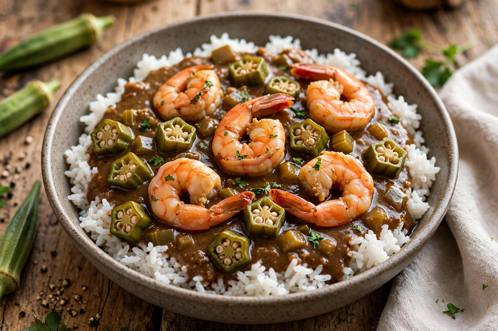

Louisiana Creole cuisine (French: cuisine créole) is a style of cooking originating in Louisiana that blends West African, French, Spanish, Amerindian, Caribbean, Portuguese, German, and Italian influences, among others. It is centered historically on New Orleans and the plantation country, and is traditionally distinguished from Cajun cuisine — the food of the French-speaking Acadian settlers of the rural southwest — though the two have influenced each other heavily and share many dishes, ingredients, and techniques.
| Louisiana Creole cuisine | |
|---|---|
 | |
| Region | Louisiana, esp. New Orleans |
| Influences | French, Spanish, West African, Native American, Caribbean, German, Italian |
| Key dishes | Gumbo, jambalaya, étouffée, shrimp remoulade, bananas Foster |
Creole cooking developed in the kitchens of New Orleans, where enslaved African cooks and later free people of color combined European techniques with local ingredients — Gulf seafood, rice, okra, filé powder (ground sassafras leaves, from the Choctaw), and the "holy trinity" of onions, celery, and bell peppers. Compared with Cajun cooking, classic Creole food is often described as more refined and urban, making greater use of tomatoes, butter, cream, and a wider range of spices, and its gumbos and sauces frequently begin with a darker roux.
Creole cuisine emerged in the 18th and 19th centuries in French and Spanish colonial Louisiana. The cookbook tradition began with works such as La Cuisine Creole (1885) by Lafcadio Hearn and The Picayune's Creole Cook Book (1901). In the 20th century, chefs such as Leah Chase of Dooky Chase's Restaurant and Emeril Lagasse brought national attention to the cuisine; restaurants like Commander's Palace and Antoine's (founded 1840) became institutions of Creole fine dining.